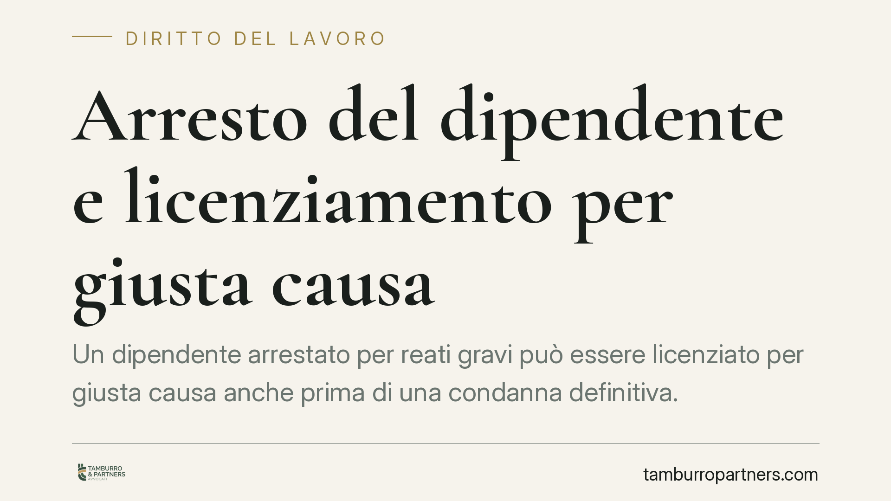

Arresto del dipendente e licenziamento per giusta causa
Un dipendente arrestato per reati gravi può essere licenziato per giusta causa anche prima di una condanna definitiva. Una recente pronuncia di merito ribadisce l'autonomia tra procedimento disciplinare e processo penale: il datore valuta il fatto secondo le regole del lavoro, non attende il giudicato penale. Vediamo cosa cambia, con termini e adempimenti da rispettare.

Il caso
Una società operante nel settore delle pulizie e della ristorazione ha licenziato per giusta causa un dipendente sottoposto ad arresto per reati di rilevante gravità. Il lavoratore ha impugnato il recesso sostenendo che, in assenza di una condanna definitiva, l'addebito non potesse ritenersi accertato.
Una recente sentenza della Corte d'Appello di Catanzaro, sezione lavoro, ha confermato la legittimità del licenziamento. *Gli estremi esatti (numero e data di deposito) sono in corso di verifica: si invita a confermarli prima di ogni utilizzo processuale.* Il principio affermato, in ogni caso, è in linea con l'orientamento consolidato della giurisprudenza di legittimità.
Inquadramento normativo
La giusta causa di licenziamento è disciplinata dall'art. 2119 del Codice civile: è quella causa che non consente la prosecuzione, nemmeno provvisoria, del rapporto di lavoro. Non richiede necessariamente un reato: rileva il venir meno del vincolo fiduciario tra le parti.
Da qui l'autonomia tra procedimento disciplinare e processo penale. Sono due giudizi distinti, con oggetto e regole probatorie diversi. Il giudice penale accerta la responsabilità penale oltre ogni ragionevole dubbio; il giudice del lavoro valuta se il comportamento, alla luce di tutte le circostanze, abbia irrimediabilmente compromesso la fiducia del datore. Per questo il datore di lavoro non è tenuto ad attendere l'esito del processo penale, né una condanna definitiva, per procedere al recesso. La Corte di Cassazione, sezione lavoro, ha più volte ribadito questa autonomia (orientamento consolidato; per l'uso in atti si raccomanda di richiamare le pronunce puntuali).
Restano ferme le garanzie procedimentali dell'art. 7 della Legge n. 300/1970 (Statuto dei lavoratori): il datore deve contestare per iscritto l'addebito in modo specifico e tempestivo, e il lavoratore ha diritto a presentare le proprie giustificazioni. La legge riconosce al dipendente almeno cinque giorni dalla contestazione prima dell'irrogazione della sanzione, salvo termini più favorevoli previsti dal contratto collettivo.
Implicazioni pratiche
Per il datore di lavoro: l'arresto o la sottoposizione a misura cautelare per fatti gravi può giustificare il licenziamento, ma la valutazione deve concentrarsi sul fatto e sul suo impatto sul rapporto, non sull'automatismo "arresto uguale recesso". Occorre motivare perché quel comportamento lede la fiducia, tenendo conto della mansione, del ruolo e del contesto aziendale.
Per il lavoratore: l'assenza di condanna penale non mette al riparo dal licenziamento. Un'eventuale assoluzione futura non comporta automaticamente la reintegra, perché i due giudizi viaggiano su binari separati. È però possibile contestare il recesso sul piano disciplinare: proporzionalità, tempestività, specificità della contestazione, rispetto delle garanzie procedurali.
I termini da conoscere
Sono i tempi che spesso decidono l'esito della vicenda.
- Difese del lavoratore: almeno 5 giorni dalla contestazione disciplinare (art. 7 L. 300/1970), salvo termini superiori del CCNL.
- Impugnazione stragiudiziale del licenziamento: 60 giorni dalla comunicazione del recesso, con atto scritto anche extragiudiziale (art. 6 L. n. 604/1966).
- Deposito del ricorso in Tribunale: entro i successivi 180 giorni dall'impugnazione stragiudiziale, a pena di inefficacia dell'impugnazione stessa (art. 6 L. n. 604/1966, come modificato dalla L. n. 183/2010).
La mancata osservanza di questi termini fa decadere il lavoratore dalla possibilità di contestare il licenziamento.
Cosa fare in concreto
- Datore di lavoro: predisponi una contestazione disciplinare scritta, specifica e tempestiva, descrivendo il fatto e il pregiudizio alla fiducia, senza limitarti a richiamare l'arresto.
- Datore di lavoro: valuta la proporzionalità della sanzione rispetto alla mansione e al CCNL applicabile, documentando le ragioni del recesso.
- Lavoratore: presenta le tue giustificazioni entro il termine (almeno 5 giorni) e conserva copia di ogni comunicazione.
- Lavoratore: impugna il licenziamento entro 60 giorni e programma il deposito del ricorso entro i successivi 180 giorni.
- Entrambi: verifica gli estremi esatti della pronuncia e delle norme applicabili prima di assumere qualsiasi decisione basata su singole sentenze.
Disclaimer
Contributo informativo a cura di Tamburro & Partners - Avv. Giuseppe Tamburro. Non costituisce parere legale.
Ogni storia di lavoro ha i suoi tempi.
Se gestisci HR e vuoi un confronto su contenzioso, ispezioni o licenziamenti, scrivi allo studio. Ti rispondiamo entro un giorno lavorativo.